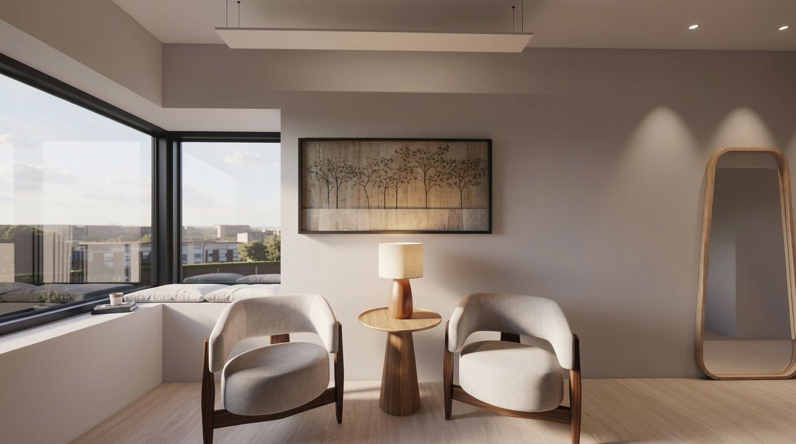
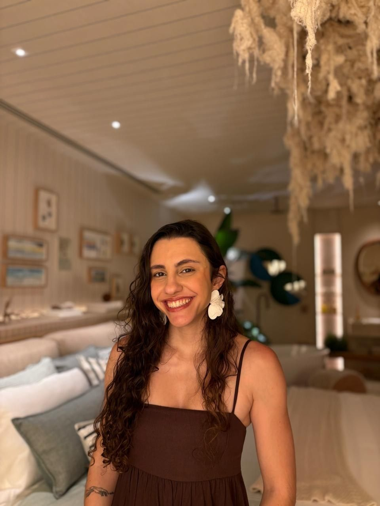

O que você traz
A rotina, as necessidades, os hábitos e a forma como quer viver o espaço.

Uma arquitetura pode ter personalidade e, ainda assim, ser inteiramente de quem a ocupa.

A Bamba
A gente acredita em uma arquitetura que sabe se movimentar: entre técnica e sensibilidade, entre o que o espaço pede e o que cada projeto pode ser.
Projetamos com repertório e intenção, buscando equilíbrio entre personalidade, contexto e funcionalidade, sem fórmulas prontas.
Olhar e método
A rotina, as necessidades, os hábitos e a forma como quer viver o espaço.
Repertório, técnica, leitura do contexto e uma visão clara de projeto.
Projetos selecionados
01
Comercial · Shopping Teresópolis
Uma loja de artigos esportivos que fala de esporte pela arquitetura, e não pelo excesso de marca.
Uma pista vermelha desenhada no piso organiza o percurso: da vitrine à ilha central, e dali ao caixa e aos provadores.
A linguagem é minimalista, e o vinho entra como cor de destaque.
Madeira, metal preto e luz trabalhando juntos como sistema de exposição.
02
Residencial · Reforma
Uma cozinha compartimentada ganhou amplitude, luz natural e contato com o exterior.
A ilha aproxima quem cozinha de quem chega, e a lavanderia foi integrada sem invadir a cozinha.
Mais luz, mais casa: tudo tem lugar, e o espaço fica pronto para receber.
03
Interiores · Barra da Tijuca, RJ
Estar e jantar integrados, com madeira, palhinha e linho numa paleta calma, e a luz indireta desenhando o espaço.
Calma, sem ser fria: madeira e tons claros de dia, luz em camadas à noite.
04
Residencial · Reforma · Região serrana
Uma casa antiga, com o layout remodelado para atender às necessidades de uma nova família.
Na fachada, mudanças sem descaracterizar: peitoris mais baixos e vãos mais largos trazem mais luz natural.
Um jardim, várias ambiências: parquinho, área de relaxamento e piscina, cada um com seu clima.
05
Comercial · Centro auditivo de reabilitação
O projeto parte do manual da marca e transforma suas cores e formas em espaço, acolhedor para um público amplo e muitas vezes mais velho.
Na fachada, os círculos atraem o olhar de quem passa e filtram a vista para a recepção.
Recepção com 10,94 m² e atendimento com 6,27 m²: acolher em pouco espaço.
Além da primeira foto
Um projeto se prova no uso diário, não só na primeira foto.
Espaços organizados a partir de como o dia realmente acontece.
Percursos claros, sem sobras e sem gargalos.
Luz natural bem aproveitada e luz artificial pensada em camadas.
Escolhidos pela beleza e pelo comportamento ao longo do tempo.
Um lugar certo para cada coisa, previsto desde o início.
Térmico, acústico e visual, atento ao clima da serra e da cidade.
Soluções que continuam simples de cuidar depois da entrega.
Um desenho que não depende da tendência do ano.
Atuação
Casas novas, reformas e ampliações, do estudo preliminar ao projeto executivo.
Layout, marcenaria, iluminação, materiais e especificação de cada ambiente.
Espaços de trabalho e atendimento com identidade e boa operação.
Teresópolis · Rio de Janeiro · Projetos online
Arquitetura com opinião, feita em diálogo.
Contato
Arquiteta e urbanista. Atendimento em Teresópolis, no Rio de Janeiro e em projetos online.
Conversar pelo WhatsApp